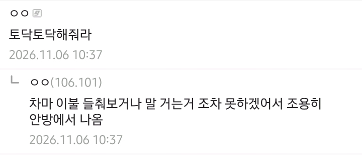
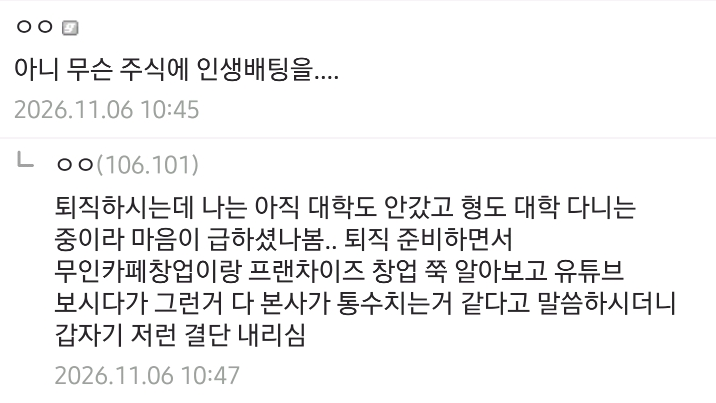
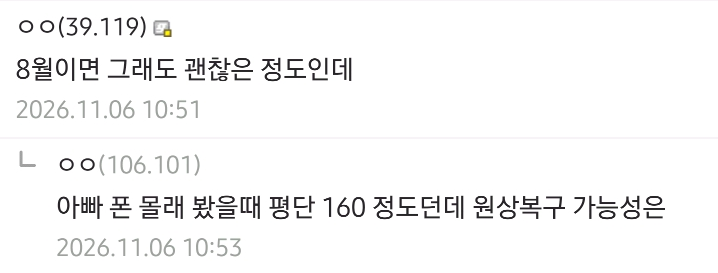

집팔고 퇴직금 건거면 사이즈가 다르긴해
10 20 50 100에도 안사던걸...
300 반토막낫을때 분할매수도안하고 몰빵한건가...
160이면 물타기로 좀 더 낮추면 금방 나올듯한데
5년뒤에는 웃고 계실거다
8월? 비틱이네
8월은 비틱이지
제발 주식투자, 아니 재테크를 하려면 한가지 자산에 몰빵좀 하지 않았으면.. 느리게 자산증식돼도 제발 여러 자산군에 배분해서 포트폴리오 좀 꾸렸으먄
많은 사람이 몇만원짜리 제품사는데도 인터넷서핑존나 하면서 몇천원이라도 깎으려고 알아보는데
주식 수백수천만원짜리 사는데는 그렇게 큰 공부를 안함
물론 이런 나도 물림 ㅅㅂ
공부한 사람일수록 S&P같은걸 하더라
160이면 근들갑같네ㅇㅇ